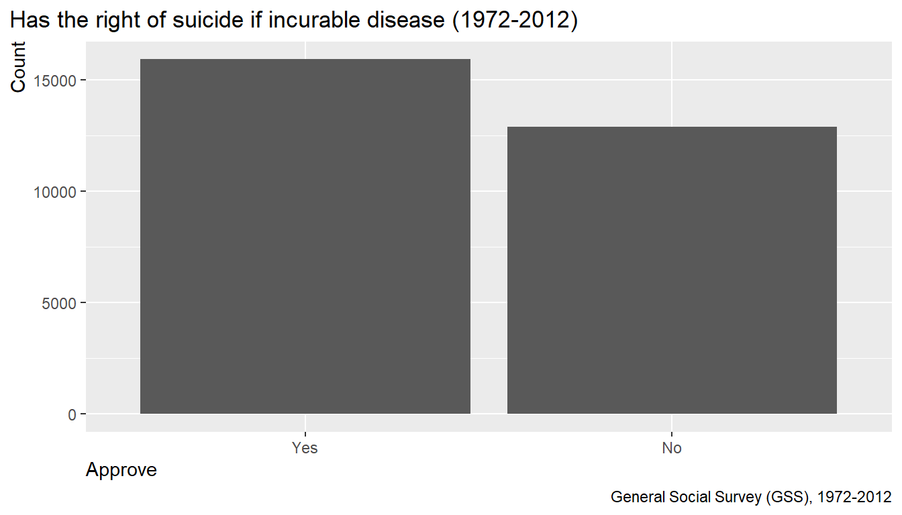
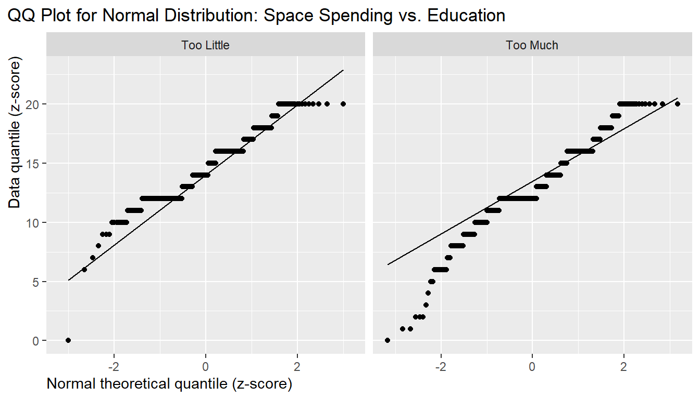

library(tidyverse) # ------------------- data exploration, visualization
library(statsr) # ------------------- Course Stat R package
library(data.table) # ------------------- table calculation
library(RColorBrewer) # ------------------- additional color pallets
library(patchwork) # ------------------- additional visualization tool
library(moments) # ------------------- package to calculate SkewnessSample size by year
# Distribution of sample size
gss %>%
filter(!is.na(year)) %>%
ggplot(aes(x = year))+
geom_bar(fill="darkgrey", color="black")+
labs(title = "Sample size per year (1972 - 2012)",
caption = "General Social Survey (GSS), 1972-2012")+
xlab("Year of survey")+
ylab("Sample size")+
theme(plot.title.position = "plot",
axis.title.y = element_text(hjust=1),
axis.title.x = element_text(hjust=0))
Sample sizes in 1972-1993 are of about equal size 1500. From 1994
only every second year was sampled with a sample size of about 2800 in
1994-2004. In 2006 the sample size jumped to 4500. In 2008-2012 the
sample size returned back to around 2000 .
Distribution by age and gender
# Distribution of age by gender
prop_sex <- gss %>%
filter(!is.na(age), !is.na(sex)) %>%
group_by(sex) %>%
summarise(n = n()) %>%
mutate(p_sex = n/sum(n))
prop_sex## # A tibble: 2 × 3
## sex n p_sex
## <fct> <int> <dbl>
## 1 Male 25084 0.441
## 2 Female 31775 0.559gss %>%
filter(!is.na(age), !is.na(sex)) %>%
ggplot(aes(x = age))+
geom_histogram(aes(fill=sex), binwidth = 5, color="black")+
labs(title = "Sample distribution for age by gender (1972-2012)",
caption = "General Social Survey (GSS), 1972-2012")+
xlab("Age")+
ylab("Count")+
theme(plot.title.position = "plot",
axis.title.y = element_text(hjust=1),
axis.title.x = element_text(hjust=0))+
facet_wrap(~sex, nrow=1)+
theme(legend.position = "nmone")
Proportion in sex over all samples is 56% female and 44% male. The
distributions of age are both right skewed for female and male. There is
a small bias towards female due to their higher sample size, which is
different from the population distribution (p = 0.5)
Can the sample statistics be generalized to the US
population?
Objective of the 2nd course project is to apply learned contents of statistical inference:
According to these objectives the following research questions were
chosen from the given data set:
Part I: Inference for categorical data
Research question 1: Inference for a single proportion (z-test)
Research question 2: Inference for difference of two proportions
(z-test)
Research question 3: Testing for independence (Chi-square test)
Part II: Inference for numerical data
Research question 4: Inference for difference of two means
(t-test)
Research question 5: Inference for differences of many means: ANOVA
test
Abbreviations:
One of the question in the GSS survey was the attitude towards
suicide if someone has an incurable disease. Do the majority of
Americans approve the view on suicide in this case?
We will use the following variable:
suicide1(2 levels): Suicide if incurable disease,
single variable
Prepare the data set
## 'data.frame': 57061 obs. of 2 variables:
## $ year : int 1972 1972 1972 1972 1972 1972 1972 1972 1972 1972 ...
## $ suicide1: Factor w/ 2 levels "Yes","No": NA NA NA NA NA NA NA NA NA NA ...Check number of levels in suicide
# Check number of levels in categorical variable
gss_select %>%
group_by(suicide1) %>%
summarise(n = n())## # A tibble: 3 × 2
## suicide1 n
## <fct> <int>
## 1 Yes 15924
## 2 No 12902
## 3 <NA> 28235# Plot number of levels in categorical variable
gss_select %>%
filter(!is.na(suicide1)) %>%
ggplot(aes(x = suicide1)) +
geom_bar()+
labs(title = "Has the right of suicide if incurable disease (1972-2012)",
caption = "General Social Survey (GSS), 1972-2012")+
xlab("Approve")+
ylab("Count")+
theme(plot.title.position = "plot",
axis.title.y = element_text(hjust=1),
axis.title.x = element_text(hjust=0))
Calculate proportions for each level
# Calculate proportion for each level per year
#
# n_total: total number of sample
# n_resp: number of responses who approve (success)
# p_hat: sample proportion for approval (estimate)
gss_result_01 <- gss_select %>%
filter(!is.na(suicide1)) %>%
group_by(year, suicide1) %>%
summarise(n_resp = n()) %>%
mutate(n_total = sum(n_resp),
p_hat = n_resp / sum(n_resp)) %>%
filter(suicide1 == "Yes")
head(gss_result_01)## # A tibble: 6 × 5
## # Groups: year [6]
## year suicide1 n_resp n_total p_hat
## <int> <fct> <int> <int> <dbl>
## 1 1977 Yes 578 1475 0.392
## 2 1978 Yes 588 1483 0.396
## 3 1982 Yes 754 1768 0.426
## 4 1983 Yes 760 1530 0.497
## 5 1985 Yes 675 1480 0.456
## 6 1986 Yes 758 1420 0.534
Condition check:
1. Independence of observations: Samples were taken randomly (see Part
1) => OK
2. Success-failure condition (SF condition):
# check SF condition for CI
#
# p_hat : sample proportion (used as approximation for true proportion p)
# SF condition: n_total * p_hat > 10 & n_total * (1 - p_hat) > 10 == TRUE
#
gss_result_01 <- gss_result_01 %>%
mutate(SF_CI = ifelse(n_total*p_hat>10 &
n_total*(1-p_hat)>10, "TRUE", "FALSE")
)
gss_result_01## # A tibble: 21 × 6
## # Groups: year [21]
## year suicide1 n_resp n_total p_hat SF_CI
## <int> <fct> <int> <int> <dbl> <chr>
## 1 1977 Yes 578 1475 0.392 TRUE
## 2 1978 Yes 588 1483 0.396 TRUE
## 3 1982 Yes 754 1768 0.426 TRUE
## 4 1983 Yes 760 1530 0.497 TRUE
## 5 1985 Yes 675 1480 0.456 TRUE
## 6 1986 Yes 758 1420 0.534 TRUE
## 7 1988 Yes 492 946 0.520 TRUE
## 8 1989 Yes 469 957 0.490 TRUE
## 9 1990 Yes 519 873 0.595 TRUE
## 10 1991 Yes 579 987 0.587 TRUE
## # ℹ 11 more rowsIndependence and SF conditions are met. We can, therefore, conclude
the sample proportion p_hat is nearly normal distributed and can apply
the z-statistics to the confidence level calculation.
Calculate SE and CI
# Calculate SE and CI
#
# se_ci = standard error for confidence interval
# moe = margin of error: z_star * se_ci
# lower = lower margin of p_hat
# upper = upper margin of p_hat
alpha <- 0.05
gss_result_01 <- gss_result_01 %>%
filter(SF_CI == "TRUE") %>%
mutate(se_ci = sqrt(p_hat * (1 - p_hat)/n_total),
moe = qnorm(1-alpha/2)*se_ci,
lower = p_hat - moe,
upper = p_hat + moe
)
gss_result_01_view <- gss_result_01 %>%
filter(year == 1977 | year == 2012) %>%
select(year, p_hat, se_ci, moe, lower, upper)
gss_result_01_view## # A tibble: 2 × 6
## # Groups: year [2]
## year p_hat se_ci moe lower upper
## <int> <dbl> <dbl> <dbl> <dbl> <dbl>
## 1 1977 0.392 0.0127 0.0249 0.367 0.417
## 2 2012 0.590 0.0139 0.0272 0.563 0.617
Conclusion: We are 95% confident that the true
proportion of the American population who approved suicide in case of
incurable disease was in 1977 between 36.7% and 41.6%, and in 2012
between 56.3% and 61.7%.
Null hypothesis (H0): There is no strong evidence that the American population approves suicide in case of incurable disease.
Alternative hypothesis (Ha): There is a strong evidence that the
American population approves suicide in case of incurable disease.
This can be formulated as:
We will carry out a one-sided z-Test
Condition check:
1. Independence of observations: Samples were taken randomly (see Part
1) => OK
2. Success-failure condition (SF condition for hypothesis test)
# check SF condition for HT
#
# p0 : true proportion (null value) given that H0 is true
# SF condition: n_total * p0t > 10 & n_total * (1 - p0) > 10 == TRUE
#
p0 <- 0.5
# check SF condition for HT
gss_result_01 <- gss_result_01 %>%
mutate(SF_HT = ifelse(n_total*p0>10 & n_total*(1-p0)>10, "TRUE", "FALSE")
)
gss_result_01_view <- gss_result_01 %>%
select(year, n_total, p_hat, SF_HT)
gss_result_01_view## # A tibble: 21 × 4
## # Groups: year [21]
## year n_total p_hat SF_HT
## <int> <int> <dbl> <chr>
## 1 1977 1475 0.392 TRUE
## 2 1978 1483 0.396 TRUE
## 3 1982 1768 0.426 TRUE
## 4 1983 1530 0.497 TRUE
## 5 1985 1480 0.456 TRUE
## 6 1986 1420 0.534 TRUE
## 7 1988 946 0.520 TRUE
## 8 1989 957 0.490 TRUE
## 9 1990 873 0.595 TRUE
## 10 1991 987 0.587 TRUE
## # ℹ 11 more rowsIndependence and SF conditions are met. We can, therefore, conclude
the sample proportion p_hat is nearly normal distributed and that we can
apply the z-statistics for the hypothesis test.
# Hypothesis test
# H0: p0 = 0.5 (there is no clear winner, 50:50)
# Ha: p > 0.5 (true proportion is greater than 0.5)
# alpha: significance level (usually 0.05, i.e. 5%)
# Type: one sided test
#
# p: true proportion
# p0: true proportion given that H0 is true
# p_hat: observed proportion from sample
#
# se_ht: standard error given that H0 is true (use p0 instead)
# Z: z-statistic used to calculate the p-value
# p_value: probability of observed or more extreme values given H0 is true
# decision: p_value < alpha : Reject H0, in favor of Ha
# decision: p_value >= alpha: Fail to reject H0
gss_result_01 <- gss_result_01 %>%
filter(SF_HT == TRUE) %>%
mutate(se_ht = sqrt(p0*(1-p0)/n_total),
Z = (p_hat - p0)/se_ht,
p_value = pnorm(Z, lower.tail = FALSE),
test_result = ifelse(p_value < alpha, "There is a majority", "No majority")
)
gss_result_01_view <- gss_result_01 %>%
select(year, p_hat, SF_HT, se_ht, Z, p_value, test_result)
gss_result_01_view## # A tibble: 21 × 7
## # Groups: year [21]
## year p_hat SF_HT se_ht Z p_value test_result
## <int> <dbl> <chr> <dbl> <dbl> <dbl> <chr>
## 1 1977 0.392 TRUE 0.0130 -8.31 1 No majority
## 2 1978 0.396 TRUE 0.0130 -7.97 1.00 No majority
## 3 1982 0.426 TRUE 0.0119 -6.18 1.00 No majority
## 4 1983 0.497 TRUE 0.0128 -0.256 0.601 No majority
## 5 1985 0.456 TRUE 0.0130 -3.38 1.00 No majority
## 6 1986 0.534 TRUE 0.0133 2.55 0.00542 There is a majority
## 7 1988 0.520 TRUE 0.0163 1.24 0.108 No majority
## 8 1989 0.490 TRUE 0.0162 -0.614 0.730 No majority
## 9 1990 0.595 TRUE 0.0169 5.58 0.0000000117 There is a majority
## 10 1991 0.587 TRUE 0.0159 5.44 0.0000000262 There is a majority
## # ℹ 11 more rowsgss_result_01 %>%
ggplot(aes(x = test_result, fill=test_result))+
geom_bar() +
labs (
title = "Hypothesis test: Approve suicide due to incurable disease in US?",
subtitle = "H0: no majority, Ha: majority, 1977-2012 (alpha = 5%)",
x = "Test results",
y = "In number of years")+
theme(plot.title.position = "plot",
axis.title.y = element_text(hjust=1),
axis.title.x = element_text(hjust=0),
legend.position = "")
Conclusion: In 14 years out of 21 the data show
strong evidence that the majority of the population does approve suicide
in case of incurable disease, with an type 1 error of 5%. I.e we may
have made an error of 5% by rejecting the hypothesis but in fact the
null hypothesis is true.
In 7 years out of 21 the data do not show strong evidence that the
majority of the population does approve suicide in case of incurable
disease
Visualizing the trend of population attitude towards suicide between 1977 to 2012:
gss_result_01 %>%
ggplot(aes(x = year))+
geom_line(aes(y = p_hat*100), col = "darkblue")+
geom_line(aes(y = lower*100), col = "black", linetype="dashed")+
geom_line(aes(y = upper*100), col = "black", linetype="dashed")+
geom_hline(yintercept = 50)+
labs (
title = "Attitude towards suicide due to incurable disease in US (1977-2012)",
subtitle = "Proportion with confidence interval in percent of sample population, (alpha = 5%)",
caption = "General Social Survey (GSS), 1972-2012",
x = "Year",
y = "Precentage")+
annotate("text", x=2005, y=51, label="approve")+
annotate("text", x=2005, y=49, label="not approve")+
theme(plot.title.position = "plot",
axis.title.y = element_text(hjust=1),
axis.title.x = element_text(hjust=0))
Conclusion: In the years 1977 to 1989, except for
1986, the majority of the population did not approved suicide. Whereas,
from 1990 the majority does approve it.
The approval rate for suicide increased from 39% to 69% between 1977 and
1994 then slightly decreased to 59% in 2012.
The results of the confidence interval and hypothesis tests agree with
each other. I.e a “Fail to reject H0” result corresponds to a confidence
interval whose lower value is less or equal to 50%.
Another question in the GSS survey is about the belief that hard work leads to success in life. We like to find differences in belief between the White and Non-white population. For this, we are going to test the difference of two proportions.
We will use the following variables:
getahead (4 levels): Opinion of how people get ahead,
response variablerace (3 levels): Race of respondent, explanatory
variable
Prepare the data set
Inspect variables
Variable race
## # A tibble: 3 × 2
## # Groups: race [3]
## race n
## <fct> <int>
## 1 White 28317
## 2 Black 4955
## 3 Other 1705# Plot
plot1 <- gss_select %>%
ggplot(aes(x=race))+
geom_bar()+
labs (title = "Distribution of race")+
theme(plot.title.position = "plot",
axis.title.y = element_text(hjust=1),
axis.title.x = element_text(hjust=0))
Variable getahead
## # A tibble: 4 × 2
## # Groups: (getahead) [4]
## `(getahead)` n
## <fct> <int>
## 1 Hard Work 23022
## 2 Both Equally 7834
## 3 Luck Or Help 4085
## 4 Other 36plot2 <- gss_select %>%
ggplot(aes(x=getahead))+
geom_bar()+
labs (title = "Distr. of belief how to get ahead in life")+
theme(plot.title.position = "plot",
axis.title.y = element_text(hjust=1),
axis.title.x = element_text(hjust=0))
plot1 + plot2
Group categorical levels to meaningful
sub-categories
Collapse categorical levels to end up with 2 levels per
variable.
# Collapsing levels
gss_select_fct <- gss_select %>%
# filter(getahead != "Both Equally") %>% ---------- In case to take out this level
mutate(race_new = fct_collapse(race,
white = c("White"),
non_white = c("Black", "Other")),
getahead_new = fct_collapse(getahead,
hard_work = c("Hard Work"),
not_hard_work_alone = c("Both Equally", "Luck Or Help", "Other"))
)
# Remove old levels
gss_select_fct <- gss_select_fct %>%
select(year, race_new, getahead_new)
# Plot
gss_select_fct %>%
ggplot(aes(x=getahead_new))+
geom_bar(aes(fill=race_new))+
labs (title = "Distribution of belief how to get ahead in life by race",
caption = "General Social Survey (GSS), 1972-2012",
x = "Opinion",
fill = "Race")+
theme(plot.title.position = "plot",
axis.title.y = element_text(hjust=1),
axis.title.x = element_text(hjust=0))
Calculate proportions for each level
# Calculate proportion for each level per year
#
# n_total: total number of sample
# n_resp: number of responses who believe in "hard_work" (success)
# p_hat: sample proportion who believe in "hard_work" (estimate)
gss_result_02 <- gss_select_fct %>%
group_by(year, race_new, getahead_new) %>%
summarise(n_resp = n()) %>%
mutate(n_total = sum(n_resp),
p_hat = n_resp / sum(n_resp)) %>%
filter(getahead_new == "hard_work")
gss_result_02 %>%
filter(year == 2012)## # A tibble: 2 × 6
## # Groups: year, race_new [2]
## year race_new getahead_new n_resp n_total p_hat
## <int> <fct> <fct> <int> <int> <dbl>
## 1 2012 white hard_work 671 972 0.690
## 2 2012 non_white hard_work 239 330 0.724
Pivot table so that each year is listed in one row
# Rearrange table so that races are listed in one row
gss_result_02 <- gss_result_02 %>%
pivot_wider(names_from = race_new, values_from = 4:6)
# simplify variable names
gss_result_02 <- gss_result_02 %>%
select(year,
n_white = n_total_white,
n_resp_white,
p_hat_white,
n_non_white = n_total_non_white,
n_resp_non_white,
p_hat_non_white)
gss_result_02 %>%
filter(year == 2012)## # A tibble: 1 × 7
## # Groups: year [1]
## year n_white n_resp_white p_hat_white n_non_white n_resp_non_white
## <int> <int> <int> <dbl> <int> <int>
## 1 2012 972 671 0.690 330 239
## # ℹ 1 more variable: p_hat_non_white <dbl>
Calculate difference of proportions and p_pool
p_pool is the weighted average of proportions and will
be used in hypothesis testing later.
# calculate difference of proportions and p_pool
gss_result_02 <- gss_result_02 %>%
mutate(p_hat_diff = p_hat_white - p_hat_non_white,
p_pool = (p_hat_white*n_white + p_hat_non_white*n_non_white)/
(n_white + n_non_white)
)
gss_result_02 %>%
select(year, p_hat_diff, p_pool) %>%
filter(year == 2012)## # A tibble: 1 × 3
## # Groups: year [1]
## year p_hat_diff p_pool
## <int> <dbl> <dbl>
## 1 2012 -0.0339 0.699
Condition check:
1. Independence of observations: Samples were taken randomly (see Part
1) => OK
2. Success-failure condition (SF condition):
# check SF condition for CI
#
# p_hat_x : sample proportion for x (used as approximation for true proportion p)
# SF cond1: n_total * p_hat_white > 10 & n_total * (1 - p_hat_white) > 10 == TRUE
# SF cond2: n_total * p_hat_non_white > 10 & n_total * (1 - p_hat_non_white) > 10 == TRUE
#
gss_result_02 <- gss_result_02 %>%
mutate(SF_CI = ifelse(n_white*p_hat_white>10 &
n_white*(1-p_hat_white)>10 &
n_non_white*p_hat_non_white>10 &
n_non_white*(1-p_hat_non_white)>10, "TRUE", "FALSE")
)
gss_result_02 %>%
group_by(SF_CI) %>%
summarise(n = n())## # A tibble: 1 × 2
## SF_CI n
## <chr> <int>
## 1 TRUE 24Independence and SF conditions are met for all years. We can,
therefore, conclude the sample proportions p_hat_white, p_hat_non_white,
and its difference p_hat_diff are nearly normal distributed and that we
can apply the z-statistics to the confidence level calculation.
Calculate SE and CI for proportion difference
# Calculate SE and CI
#
# se_ci = standard error for confidence interval
# moe = margin of error: z_star * se_ci
# lower = lower margin of p_hat
# upper = upper margin of p_hat
alpha = 0.05
gss_result_02 <- gss_result_02 %>%
filter(SF_CI == "TRUE") %>%
mutate(se_ci = sqrt(p_hat_white* (1-p_hat_white)/ n_white +
p_hat_non_white*(1-p_hat_non_white)/n_non_white),
moe = qnorm(1-alpha/2)*se_ci,
lower = p_hat_diff - moe,
upper = p_hat_diff + moe,
)
gss_result_02_view <- gss_result_02 %>%
filter(year == 2012) %>%
select(year, p_hat_diff, se_ci, moe, lower, upper)
gss_result_02_view## # A tibble: 1 × 6
## # Groups: year [1]
## year p_hat_diff se_ci moe lower upper
## <int> <dbl> <dbl> <dbl> <dbl> <dbl>
## 1 2012 -0.0339 0.0287 0.0563 -0.0902 0.0224
Conclusion: We are 95% confident that the true
proportion difference between White and Non-white Americans who belief
that hard work leads to success is between -9.0% and 2.2% in 2012. I.e.
the true difference could be either negative or positive. Therefore,
there is no clear winner. This will be covered in the hypothesis
test.
Null hypothesis (H0): There is no strong evidence of a difference in
belief between White and Non-white American population that hard work
leads to success in life.
Alternative hypothesis (Ha): There is a strong evidence of a
difference in belief between White and Non-white American population
that hard work leads to success in life.
This can be formulated as:
We will carry out a two-sided z-Test
Condition check:
1. Independence of observations: Samples were taken randomly (see Part
1) => OK
2. Success-failure condition (SF condition for hypothesis test)
# check SF condition for HT
#
# p_pool : weighted proportion (estimate for p0) given that H0 is true
# SF cond1.: n_white * p_pool > 10 & n_white * (1 - p_pool) > 10 == TRUE
# SF cond2.: n_non_white * p_pool > 10 & n_non_white * (1 - p_pool) > 10 == TRUE
#
gss_result_02 <- gss_result_02 %>%
mutate(SF_HT = ifelse(n_white*p_pool>10 &
n_white*(1-p_pool)>10 &
n_non_white*p_pool>10 &
n_non_white*(1-p_pool)>10, "TRUE", "FALSE")
)
gss_result_02 %>%
group_by(SF_HT) %>%
summarise(n = n())## # A tibble: 1 × 2
## SF_HT n
## <chr> <int>
## 1 TRUE 24gss_result_02_view <- gss_result_02 %>%
select(year, p_hat_white, p_hat_non_white, p_hat_diff, p_pool, SF_HT)
View(gss_result_02_view[19:24,])Independence and SF conditions are met for all years. We can,
therefore, conclude the sample proportion p_diff is nearly normal
distributed and that we can apply the z-statistics for the hypothesis
test.
Hypothesis test
# Hypothesis test
# H0: p0_diff = 0 (there is no difference)
# Ha: p_diff != 0 (there is a difference)
# alpha: significance level (usually 0.05, i.e. 5%)
# Type: two-sided test
#
# p_diff: true proportion difference
# p0_diff: true proportion difference given that H0 is true
# p_hat_diff: observed proportion difference from sample
#
# se_ht: standard error given that H0 is true (use p_pool instead)
# Z: z-statistic used to calculate the p-value
# p_value: probability of observed or more extreme values given H0 is true
# decision: p_value < alpha : Reject H0, in favor of Ha
# decision: p_value >= alpha: Fail to reject H0
p0_diff <- 0
gss_result_02 <- gss_result_02 %>%
filter(SF_HT == TRUE) %>%
mutate(se_ht = sqrt(p_pool*(1-p_pool)/n_white +
p_pool*(1-p_pool)/n_non_white),
Z = (p_hat_diff - p0_diff)/se_ht,
p_value = 2 * pnorm(abs(Z), lower.tail = FALSE),
test_result = ifelse(p_value < alpha, "There is a difference", "No difference")
)
df_H0_reject <- gss_result_02 %>%
# filter(test_result == "There is a difference") %>%
select(year, p_hat_diff, lower, upper, se_ht, Z, p_value, test_result)
df_H0_reject## # A tibble: 24 × 8
## # Groups: year [24]
## year p_hat_diff lower upper se_ht Z p_value test_result
## <int> <dbl> <dbl> <dbl> <dbl> <dbl> <dbl> <chr>
## 1 1973 0.0562 -0.0171 0.129 0.0365 1.54 0.124 No difference
## 2 1974 0.0340 -0.0427 0.111 0.0387 0.878 0.380 No difference
## 3 1976 0.160 0.0724 0.247 0.0434 3.69 0.000226 There is a diffe…
## 4 1977 0.0639 -0.0116 0.139 0.0379 1.69 0.0918 No difference
## 5 1980 0.0344 -0.0480 0.117 0.0414 0.831 0.406 No difference
## 6 1982 0.145 0.0951 0.196 0.0255 5.70 0.0000000122 There is a diffe…
## 7 1984 0.0442 -0.0251 0.113 0.0346 1.28 0.202 No difference
## 8 1985 0.0750 0.000395 0.150 0.0369 2.03 0.0419 There is a diffe…
## 9 1987 0.0487 0.00138 0.0959 0.0239 2.04 0.0416 There is a diffe…
## 10 1988 0.0685 -0.0113 0.148 0.0396 1.73 0.0838 No difference
## # ℹ 14 more rows## # A tibble: 2 × 2
## test_result n
## <chr> <int>
## 1 No difference 17
## 2 There is a difference 7# Plot result
gss_result_02 %>%
ggplot(aes(x = test_result, fill=test_result))+
geom_bar() +
labs (
title = "Hypothesis test: Hard work leads to success",
subtitle = "Difference in belief between White and Non-white Americans, 1973-2012 (alpha = 5%)",
caption = "General Social Survey (GSS), 1972-2012",
x = "Test results",
y = "In number of years")+
theme(plot.title.position = "plot",
axis.title.y = element_text(hjust=1),
axis.title.x = element_text(hjust=0),
legend.position = "")
Conclusion: In 17 years out of 24 the data show no
strong evidence that there is a difference in belief between White and
Non-white Americans that hard work leads to success. In other words, we
have no strong evidence that being a white American increases or reduces
the belief that hard work leads to success in life.
Only in 7 years out of 24 the data show a strong evidence that there is
a difference in belief between White and Non-white Americans that hard
work leads to success. In other words, we do have strong evidence that
being a white American increases or reduces the belief that hard work
leads to success in life
Visualizing the trend of population belief towards hard work:
# Plot trend of Confidence Intervals
gss_result_02 %>%
ggplot(aes(x = year))+
geom_line(aes(y = p_hat_diff*100), col = "darkblue")+
geom_line(aes(y = lower*100), col = "black", linetype="dashed")+
geom_line(aes(y = upper*100), col = "black", linetype="dashed")+
geom_hline(yintercept = 0)+
labs (
title = "Get ahead in life by hard work in US (1973-2012)",
subtitle = "Difference in belief between White and Non-White Americans (alpha = 5%)",
# subtitle = "Proportion difference with confidence interval in percent of sample population (alpha=5%)",
caption = "General Social Survey (GSS), 1972-2012",
x = "Year",
y = "Precentage")+
annotate("text", x=1998, y=17, label="White believe more")+
annotate("text", x=1998, y=-10, label="Non-White belive more")+
theme(plot.title.position = "plot",
axis.title.y = element_text(hjust=1),
axis.title.x = element_text(hjust=0))
Conclusion: Overall, the White group believes more
than the Non-White group, that hard work leads to success in life.
Because the proportion difference is in most cases positive:
p_hat_diff = p_hat_white - p_hat_non_white > 0
Therefore: p_hat_white > p_hat_non_white
And p_hat is the proportion of belief on hard work
However, in most cases (17 out of 24) the difference is not
statistically significant, due to a large margin of error
(+/-6.8%)
The results of the confidence interval and hypothesis tests agree
with each other. I.e a “Fail to reject H0” result corresponds to a
confidence interval that does include 0.
In this example, we want to answer the question of whether there is a relationship between the preferred political party and the level of education. Both variables are categorical variables with multiple levels.
To test for a relationship we will conduct a Chi-square test
for independence. An introduction to this test can be found in the text book for this course,
OpenIntro Statistics, 4th edition, page 240
We will use the following variables:
partyid(8 levels): Political party affiliation,
response variabledegree (5 levels): Respondents highest degree,
explanatory variableThe Hypothesis test can be formulated as follows:
Prepare the data set
# Select variables of interest
gss_select <- gss %>%
select(year, degree, partyid)
# Check NA counts for each variable
colSums(is.na(gss_select))## year degree partyid
## 0 1010 327
Inspect variables
## # A tibble: 5 × 2
## # Groups: (degree) [5]
## `(degree)` n
## <fct> <int>
## 1 Lt High School 11731
## 2 High School 29146
## 3 Junior College 3053
## 4 Bachelor 7962
## 5 Graduate 3862plot1 <- gss_select %>%
ggplot(aes(x=degree))+
geom_bar()+
labs (title = "Education degrees - levels")+
theme(plot.title.position = "plot",
axis.title.y = element_text(hjust=1),
axis.title.x = element_text(hjust=0))+
coord_flip()
# Inspect category partyid
gss_select %>%
group_by(partyid) %>%
count()## # A tibble: 8 × 2
## # Groups: partyid [8]
## partyid n
## <fct> <int>
## 1 Strong Democrat 8885
## 2 Not Str Democrat 11801
## 3 Ind,Near Dem 6666
## 4 Independent 8327
## 5 Ind,Near Rep 4869
## 6 Not Str Republican 8889
## 7 Strong Republican 5477
## 8 Other Party 840plot2 <- gss_select %>%
ggplot(aes(x=partyid))+
geom_bar()+
labs (title = "Political party - levels")+
theme(plot.title.position = "plot",
axis.title.y = element_text(hjust=1),
axis.title.x = element_text(hjust=0))+
coord_flip()
plot1 + plot2
Filter for 2012
Group categorical levels of variable partyid to
meaningful sub-categories
We will assign the 8 political party preferences to 3 main party
groups:
############################################################ Regroup levels
# -------------------------------------------------------- Collapse levels
gss_select_fct <- gss_select_2012 %>%
filter(partyid != "Other Party") %>%
mutate(partyid2 = fct_collapse(partyid,
Republican = c("Not Str Republican",
"Strong Republican"),
Independent = c("Ind,Near Dem",
"Independent",
"Ind,Near Rep"),
Democrat = c("Strong Democrat",
"Not Str Democrat")
),
degree2 = degree %>% fct_rev()
) %>%
select(degree2, partyid2)
# -------------------------------------------------- Reduce levels from 8 to 3
gss_select_fct$partyid2 <- droplevels(gss_select_fct$partyid2)
# --------------------------------------------------------------- Order levels
gss_select_fct$partyid2 <-
factor(gss_select_fct$partyid2,
levels = c("Republican","Democrat","Independent"),
ordered = TRUE)
gss_select_fct %>%
group_by(partyid2) %>%
summarise(n = n())## # A tibble: 3 × 2
## partyid2 n
## <ord> <int>
## 1 Republican 441
## 2 Democrat 697
## 3 Independent 761
Plot preferred party by education degree in proportion
############################################# Plot proportions party by degree
gss_select_fct %>%
ggplot(aes(x=degree2))+
geom_bar(aes(fill=partyid2), position = "fill")+
labs(title = "Relationship between education degree and preferred party",
subtitle = "US 2012, in proportion", fill = "Party",
caption = "General Social Survey (GSS), 1972-2012") +
xlab("Education Degree")+
ylab("Party (proportions)")+
scale_fill_brewer(palette = "Set1")+
theme(plot.title.position = "plot",
axis.title.y = element_text(hjust = 1),
axis.title.x = element_text(hjust = 0)
)
Create a 2-way-table (contingency table)
# ---------------------------------------------------- Create contingency table
gss_cont_table <- table(gss_select_fct)
gss_cont_table## partyid2
## degree2 Republican Democrat Independent
## Graduate 37 91 68
## Bachelor 107 123 108
## Junior College 35 58 52
## High School 231 337 379
## Lt High School 31 88 154
Check conditions
All conditions are met and nearly normal distribution can be assumed.
Chi-square test statistic can be applied
Chi-square test
############################################################### Chi-square test
model <- chisq.test(table(gss_select_fct$degree2, gss_select_fct$partyid2))
model##
## Pearson's Chi-squared test
##
## data: table(gss_select_fct$degree2, gss_select_fct$partyid2)
## X-squared = 62.212, df = 8, p-value = 1.713e-10
Conclusion The p-value is about zero. We therefore, can
reject H0. I.e. party preference is not independent from education
degree, with a p-value of nearly zero percent.
P-value: Probability of an observed value or more extreme than
X-squared = 62.2 given that H0 is true.
One of the question in the GSS survey deals with the attitude towards government spending on space exploration (too little, too much). We want to know if there is difference in the attitude due to average years of education in 2010 to 2012. We assume that people with more years of education may think that the gov. spending is too little. To proof this claim we will conduct a hypothesis test and calculate the confidence interval by t-statistic.
We will use the following variables:
natspac(categorical, 3 levels): Space exploration
program, response variableeduc (numerical): Highest year of school completed,
explanatory variableTasks:
Prepare the data set
# Prepare the data set
# ---------------------------------------------------------- Select variables
gss_select <- gss %>%
select(year, educ, natspac) %>%
filter(!is.na(educ), !is.na(natspac))
# ------------------------------------------------------ Select 2010 - 2012 data
gss_select <- gss_select %>%
filter(year %in% c(2010:2012))
Variable natspac
Check number of levels
# Check number of levels in categorical variable
gss_select %>%
group_by(natspac) %>%
summarise(n = n())## # A tibble: 3 × 2
## natspac n
## <fct> <int>
## 1 Too Little 372
## 2 About Right 810
## 3 Too Much 656Since we only want to compare levels “too little” and “too much”
spending, we will remove level “About Right” from the data set.
# Remove level "About Right" in variable
gss_select2 <- gss_select %>%
filter(!natspac == "About Right")
gss_select2 %>%
group_by(natspac) %>%
summarise(n = n())## # A tibble: 2 × 2
## natspac n
## <fct> <int>
## 1 Too Little 372
## 2 Too Much 656# Drop factor levels from 3 to 2 in, required for plotting
gss_select2$natspac <- droplevels(gss_select2$natspac)
# Plot distribution of "too little" vs. "too much"
gss_select2 %>%
ggplot(aes(x = natspac))+
geom_bar() +
labs(title = "Attitude towards nat. space exploration funding",
subtitle = "(US in 2010-2012, sample size = 1028)",
caption = "General Social Survey (GSS), 1972-2012") +
xlab("Space exploration funding")+
theme(plot.title.position = "plot",
axis.title.y = element_text(hjust = 1),
axis.title.x = element_text(hjust = 0)
)
Summary statistics for variable
educ
Rename the group names:
# Summary statistics for variable "educ"
stat_descript <- gss_select2 %>%
group_by(natspac) %>%
summarise(n = n(),
mean_edu = mean(educ),
sd_edu = sd(educ),
median_edu = median(educ)
)
stat_descript## # A tibble: 2 × 5
## natspac n mean_edu sd_edu median_edu
## <fct> <int> <dbl> <dbl> <dbl>
## 1 Too Little 372 14.5 2.77 14
## 2 Too Much 656 12.9 3.09 12stat_descript <- stat_descript %>%
pivot_wider(names_from = natspac, values_from = 2:5)
stat_descript <- stat_descript %>%
select(n_1 = "n_Too Little",
n_2 = `n_Too Much`,
mean_1 = "mean_edu_Too Little",
mean_2 = `mean_edu_Too Much`,
sd_1 = `sd_edu_Too Little`,
sd_2 = `sd_edu_Too Much`)
# year of education distribution plots
plot1 <- gss_select2 %>%
ggplot(aes(educ))+
geom_histogram(binwidth = 2, fill="darkgrey", col="black")+
facet_wrap(~natspac, ncol = 1)+
labs(title = "Supporting space funding by yrs of education",
subtitle = "(US in 2010-2012, sample size = 1028)") +
xlab("Years of education")+
theme(plot.title.position = "plot",
axis.title.y = element_text(hjust = 1),
axis.title.x = element_text(hjust = 0)
)
plot2 <- gss_select2 %>%
ggplot(aes(educ))+
geom_boxplot()+
facet_wrap(~natspac, ncol = 1)+
labs(title = " ",
subtitle = " ",
caption = "General Social Survey (GSS), 1972-2012") +
xlab("")+
theme(axis.text.y = element_blank(),
axis.ticks.y = element_blank())
plot1 + plot2gss_select2 %>%
ggplot(aes(sample = educ))+
geom_qq()+
geom_qq_line()+
facet_wrap(~natspac, nrow = 1)+
labs(title = "QQ Plot for Normal Distribution: Space Spending vs. Education")+
xlab("Normal theoretical quantile (z-score)")+
ylab("Data quantile (z-score)")+
theme(plot.title.position = "plot",
axis.title.y = element_text(hjust=1),
axis.title.x = element_text(hjust=0))
The distributions show a relative strong left skew. We like to calculate
the skewness and decide if we can use the samples for the statistical
test.
# Calculate skewness for each sub-group
gss_select2 %>%
group_by(natspac) %>%
summarise(skew = skewness(educ))## # A tibble: 2 × 2
## natspac skew
## <fct> <dbl>
## 1 Too Little -0.234
## 2 Too Much -0.311
The skewness values are between -0.5 and +0.5, i.e. approximately
symmetric distribution. Link.
Check conditions
1. Independence:
2. Sample size/ skewness
All conditions are met and nearly normal distribution can be assumed.
t-statistic can be applied
Calculate confidence interval
Formula:
First, we will use the function inference() from the
statsr package, provided for this course.
########################################## statsr::inference() for t.test for CI
t_test_CI <- inference(y = educ,
x = natspac,
data = gss_select2,
statistic = "mean",
type = "ci",
method = "theoretical")## Response variable: numerical, Explanatory variable: categorical (2 levels)
## n_Too Little = 372, y_bar_Too Little = 14.5054, s_Too Little = 2.7682
## n_Too Much = 656, y_bar_Too Much = 12.8933, s_Too Much = 3.0916
## 95% CI (Too Little - Too Much): (1.2433 , 1.9809)
Second, confidence interval calculated with base functions.
########################################################## manual t.test for CI
# set significance level
alpha <- 0.05
# calculate degree of freedom
# mean_1 = mean_too_little, mean_2 = mean_too_much
stat_descript <- stat_descript %>%
mutate(
mean_diff = mean_1 - mean_2,
dof = min(n_1, n_2) - 1,
se_ci = sqrt(sd_1^2/n_1 + sd_2^2/n_2),
moe = qt(1-alpha/2,dof) * se_ci,
lower = mean_diff - moe,
upper = mean_diff + moe)
stat_descript## # A tibble: 1 × 12
## n_1 n_2 mean_1 mean_2 sd_1 sd_2 mean_diff dof se_ci moe lower upper
## <int> <int> <dbl> <dbl> <dbl> <dbl> <dbl> <dbl> <dbl> <dbl> <dbl> <dbl>
## 1 372 656 14.5 12.9 2.77 3.09 1.61 371 0.188 0.369 1.24 1.98
Conclusion We are 95% confident that the true
difference in mean for years in education is between 1.24 and 1.98
years.
I.e. The American public who thinks that the spending for space
exploration is too little have in average 1.24 to 1.98 more years of
education as their counterparts.
Null hypothesis (H0): There is no strong evidence that Americans with
more years in education think that the government spending for space
exploration is too little.
Alternative hypothesis (Ha): There is a strong evidence that
Americans with more years in education think that the government
spending for space exploration is too little.
This can be formulated as:
We will carry out a one-sided t-Test
Check conditions
1. Independence:
2. Sample size/ skewness
All conditions are met and nearly normal distribution can be assumed.
t-statistic can be applied
Hypothesis test
First, hypothesis test with function inference() from
statsr package:
########################################## statsr::inference() for t.test for HT
# Group 1: spending is too little
# Group 2: spending is too much
# H0: mue_1 - mue_2 = 0 (there is no difference in the true mean)
# Ha: mue_1 - mue_2 > 0 (mue_1 is greater than mue_2)
t_test_HT <- inference(y = educ,
x = natspac,
data = gss_select2,
statistic = "mean",
type = "ht",
null = 0,
alternative = "greater",
method = "theoretical")## Response variable: numerical
## Explanatory variable: categorical (2 levels)
## n_Too Little = 372, y_bar_Too Little = 14.5054, s_Too Little = 2.7682
## n_Too Much = 656, y_bar_Too Much = 12.8933, s_Too Much = 3.0916
## H0: mu_Too Little = mu_Too Much
## HA: mu_Too Little > mu_Too Much
## t = 8.5961, df = 371
## p_value = < 0.0001
Second, hypothesis test with base functions.
########################################################## manual t.test for HT
# set the null value
null_value <- 0
# hypothesis test
stat_descript <- stat_descript %>%
mutate(
t = (mean_diff - null_value)/se_ci,
p_value = (1 - pt(abs(t), dof)),
test_result = ifelse(p_value < alpha, "Reject H0", "Fail to reject H0")
)
stat_descript %>%
select(n_1, mean_1, sd_1,
n_2, mean_2, sd_2,
dof, t, p_value,
test_result)## # A tibble: 1 × 10
## n_1 mean_1 sd_1 n_2 mean_2 sd_2 dof t p_value test_result
## <int> <dbl> <dbl> <int> <dbl> <dbl> <dbl> <dbl> <dbl> <chr>
## 1 372 14.5 2.77 656 12.9 3.09 371 8.60 1.11e-16 Reject H0
Conclusion The data show a strong evidence that
Americans with more years in education think that the government
spending for space exploration is too little. The p-value is <
0.0001. I.e. the probability to observe a t-value of 8.60 or more
extreme, given that the null hypothesis is true, is almost zero.
The results of the confidence interval and hypothesis tests agree with
each other. I.e a “Reject H0” result corresponds to a confidence
interval that does not include the value “zero”.
Prepare the data set
############################################################# Prepare data set
# ----------------------------------------------------------- select variables
gss_select <- gss %>%
select(year, childs, class) %>%
filter(!is.na(childs), !is.na(class))
# ------------------------------------------------------------ Filter for 2012
gss_select <- gss_select %>%
filter(year == c(2012))
Check levels in variable class
################################################################ Check levels
# -------------------------------------------------------------- Check levels
gss_select %>%
group_by(year, class) %>%
count()## # A tibble: 4 × 3
## # Groups: year, class [4]
## year class n
## <int> <fct> <int>
## 1 2012 Lower Class 200
## 2 2012 Working Class 852
## 3 2012 Middle Class 837
## 4 2012 Upper Class 65# ------------------------------------------------------- remove level No Class
gss_select <- gss_select %>%
filter(class != "No Class")
# ------------------------------------------------------- reset level number
gss_select$class <- droplevels(gss_select$class)
Check conditions for ANOVA test
1. Independence
############################################################ check distributions
# --------------------------------------------------------------- histogram
plot1 <- gss_select %>%
ggplot(aes(x=childs)) +
geom_histogram(fill="lightblue", color="black", binwidth = 1)+
facet_wrap(~class, nrow=1)+
labs(title = "Distribution of Children per Class (2012)")+
ylab("Count")+
xlab("")+
theme(plot.title.position = "plot",
axis.title.y = element_text(hjust=1),
axis.title.x = element_text(hjust=0))
# ---------------------------------------------------------------- boxplots
plot2 <- gss_select %>%
ggplot(aes(y=childs))+
geom_boxplot()+
facet_wrap(~class, nrow = 1)+
coord_flip()+
labs(caption = "General Social Survey (GSS), 1972-2012") +
ylab("Number of children per respondent")+
theme(axis.text.y = element_blank(),
axis.ticks.y = element_blank())+
theme(plot.title.position = "plot",
axis.title.y = element_text(hjust=1),
axis.title.x = element_text(hjust=0))
plot1 / plot2
# -------------------------------------------------------------------- qq plots
gss_select %>%
ggplot(aes(sample = childs))+
geom_qq()+
geom_qq_line()+
facet_wrap(~class, nrow = 1)+
labs(title = "QQ Plot for Normal Distribution: Children per Class")+
xlab("Normal theoretical quantile (z-score)")+
ylab("Data quantile (z-score)")+
theme(plot.title.position = "plot",
axis.title.y = element_text(hjust=1),
axis.title.x = element_text(hjust=0))
# -------------------------------------------------------- Skewness
gss_select %>%
group_by(class) %>%
summarize(n = n(),
skew = skewness(childs))## # A tibble: 4 × 3
## class n skew
## <fct> <int> <dbl>
## 1 Lower Class 200 1.01
## 2 Working Class 852 0.953
## 3 Middle Class 837 0.914
## 4 Upper Class 65 0.927
The skewness values are between -1.0 and +1.0, i.e. the distribution
is moderately skewed. Link.
However, there are no large numbers of extreme outliers. Therefore, we
can assume that the variables will hold nearly normal
distribution.
############################################################# Summary statistic
sum1 <- gss_select %>%
group_by(class) %>%
summarise(n_class = n(),
mean_class = mean(childs),
sd_class = sd(childs))
sum1## # A tibble: 4 × 4
## class n_class mean_class sd_class
## <fct> <int> <dbl> <dbl>
## 1 Lower Class 200 2.28 1.92
## 2 Working Class 852 1.87 1.65
## 3 Middle Class 837 1.80 1.61
## 4 Upper Class 65 2 1.78################################################################ Boxplots again
ggplot(data = gss_select, aes(y=childs))+
geom_boxplot() +
facet_wrap(~class, nrow = 1)+
labs(title = "Distribution of Children per Class (2012)",
caption = "General Social Survey (GSS), 1972-2012") +
ylab("Number of children per respondent")+
theme(axis.text.x = element_blank(),
axis.ticks.x = element_blank())+
theme(plot.title.position = "plot",
axis.title.y = element_text(hjust=1),
axis.title.x = element_text(hjust=0))
From summary statistic and from the boxplot we can assume that the
variation is sufficiently consistent (sd range 1.60 to 1.92)
All conditions are met and we can proceed to the ANOVA test.
Null hypothesis (H0): There is no strong evidence that the average
number of children per respondent differs between social classes.
Alternative hypothesis (Ha): There is strong evidence that the average
number of children per respondent differs at least between two social
classes.
This can be formulated as:
mue: population mean (true mean)
mean: sample mean (estimate of true mean)
k: number of classes
ANOVA and Multiple pairwise test with function
inference() from statsr package:
################################################################ ANOVA Test
# ------------------------------------------------------ calculating alpha_star
alpha <- 0.05
K <- length(sum1$class) # ---------------------- number of classes
alpha_star <- alpha/(K*(K-1)/2) # ---------------------- alpha_star
print(paste0("alpha_star (Benferroni correction) = ", round(alpha_star, 4)))## [1] "alpha_star (Benferroni correction) = 0.0083"# ------------------------------------------------------------------ ANOVA Test
anova_test <- inference(y = childs,
x = class,
data = gss_select,
statistic = "mean",
type = "ht",
null = 0,
alternative = "greater",
method = "theoretical",
sig_level = 0.05)## Response variable: numerical
## Explanatory variable: categorical (4 levels)
## n_Lower Class = 200, y_bar_Lower Class = 2.275, s_Lower Class = 1.9151
## n_Working Class = 852, y_bar_Working Class = 1.8709, s_Working Class = 1.6489
## n_Middle Class = 837, y_bar_Middle Class = 1.8029, s_Middle Class = 1.6083
## n_Upper Class = 65, y_bar_Upper Class = 2, s_Upper Class = 1.7766
##
## ANOVA:
## df Sum_Sq Mean_Sq F p_value
## class 3 37.0841 12.3614 4.4571 0.004
## Residuals 1950 5408.1462 2.7734
## Total 1953 5445.2303
##
## Pairwise tests - t tests with pooled SD:
## # A tibble: 6 × 3
## group1 group2 p.value
## <chr> <chr> <dbl>
## 1 Working Class Lower Class 0.00204
## 2 Middle Class Lower Class 0.000324
## 3 Middle Class Working Class 0.401
## 4 Upper Class Lower Class 0.248
## 5 Upper Class Working Class 0.547
## 6 Upper Class Middle Class 0.358
Conclusion 1
Conclusion 2:
– Middle Class - Working Class (p-value 0.40 > 0.0083) => Fail
to reject H0
– Upper Class - Lower Class (p-value 0.25 > 0.0083) => Fail to
reject H0
– Upper Class - Working Class (p-value 0.55 > 0.0083) => Fail to
reject H0
– Upper Class - Middle Class (p-value 0.36 > 0.0083) => Fail to
reject H0
Alternatively, we can also calculate ANOVA and Multiple Comparison
Test with functions from the stats package:
aov() for ANOVA testTukeyHSD() for a modified multiple comparison
testFor more information see Help function in RStudio.
### ANOVA Test (Alternative approach) ##########################################
#
# H0: average number of children per respondent is the same across all social classes
# Ha: average number of children per respondent is not the same across all social classes,
# at least not between two groups
###############################################################################
alpha <- 0.05
gss_select %>%
aov(childs ~ class, data = .) %>%
summary()## Df Sum Sq Mean Sq F value Pr(>F)
## class 3 37 12.361 4.457 0.00398 **
## Residuals 1950 5408 2.773
## ---
## Signif. codes: 0 '***' 0.001 '**' 0.01 '*' 0.05 '.' 0.1 ' ' 1
We get the identical result as from function
inference.
A common post-hoc test (after test) for ANOVA is the TukeyHSD
test
### Post-hoc ANOVA TukeyHSD test ##############################################
model <- gss_select %>%
aov(childs ~ class, data = .) %>%
TukeyHSD()
model## Tukey multiple comparisons of means
## 95% family-wise confidence level
##
## Fit: aov(formula = childs ~ class, data = .)
##
## $class
## diff lwr upr p adj
## Working Class-Lower Class -0.40410798 -0.7405606 -0.06765532 0.0109810
## Middle Class-Lower Class -0.47213262 -0.8091579 -0.13510729 0.0018372
## Upper Class-Lower Class -0.27500000 -0.8863672 0.33636722 0.6543625
## Middle Class-Working Class -0.06802464 -0.2764177 0.14036839 0.8357024
## Upper Class-Working Class 0.12910798 -0.4219015 0.68011748 0.9313006
## Upper Class-Middle Class 0.19713262 -0.3542267 0.74849198 0.7945317The p-values from the TukeyHSD tests are adjusted p-values.
Both ANOVA test functions are more or less a kind of “blackboxes”.
Below we wrote a code to manually calculate ANOVA and the multiple
comparison t-test.
ANOVA Test
## # A tibble: 4 × 4
## class n_class mean_class sd_class
## <fct> <int> <dbl> <dbl>
## 1 Lower Class 200 2.28 1.92
## 2 Working Class 852 1.87 1.65
## 3 Middle Class 837 1.80 1.61
## 4 Upper Class 65 2 1.78# --------------------------------------------------- Number of obs. and groups
N <- length(gss_select$childs) # --- total # observations
K <- length(sum1$class) # --------------- # groups
#
# ------------- Calculate SSE (sum squared errors) and MSE (mean squared errors)
SSE <- sum((sum1$n_class - 1) * sum1$sd_class^2)
dfe <- N - K # ----- degree of freedom
MSE <- SSE/dfe
# --------------------------------------------- Calculate SST (sum squared total)
mean_total <- sum(gss_select$childs)/N
SST <- sum((gss_select$childs - mean_total)^2)
df <- N - 1
# ------------- Calculate SSG (sum squared groups) and MSG (mean squared groups)
SSG <- sum(sum1$n_class * (sum1$mean_class - mean_total)^2)
dfg <- K - 1 # ----- degree of freedom
MSG <- SSG/dfg
# Check sum
SST2 <- SSG + SSE
df2 <- dfe + dfg
# print(paste0("Check sum for Sum Squared: SST = SSE + SSG : ", near(SST, SST2)))
# print(paste0("Check sum for degrees of freedom: df = dfe + dfg : ", near(df, df2)))
# ---------------------------------------------------------------------- F.Test
F <- MSG/MSE
p_value <- pf(F, dfg, dfe, lower.tail = FALSE)
# --------------------------------------------------------------- Output table
class <- c(dfg, SSG, MSG, F, p_value) # ------- vector for results groups
Residuals <- c(dfe, SSE, MSE, NA, NA) # ------- vector for results error
Total <- c(df, SST, NA, NA, NA) # ------- vector for results total
output <- cbind(class, Residuals, Total) # ------- bind to dataframe
output <- t(output) # ------- transpose
colnames(output) <- c("df", "Sum_sq", "Mean_sq", "F", "p_value") # add colnames
output## df Sum_sq Mean_sq F p_value
## class 3 37.08406 12.361352 4.457098 0.003976408
## Residuals 1950 5408.14624 2.773408 NA NA
## Total 1953 5445.23030 NA NA NAIdentical result as in other approaches.
Multiple Comparison Test
Create a table for each group pair by combinatorics without repetition
######## Create combination table for all Groups without repetition ########
# change factor to character
sum1$class <- as.character(sum1$class)
# create combination array
dfc <- combn(sum1$class,2)
dfc <- as.data.frame(dfc)
# Transpose dataframe
dfc_t <- t(dfc)
dfc_t <- as.data.frame(dfc_t)
# Rename name of column
dfc_t_left <- dfc_t %>%
rename(c("class" = "V1"))
dfc_t_right <- dfc_t %>%
rename(c("class" = "V2"))
# Join with dataframe sum1 (for values)
df_joint_left <- dfc_t_left %>%
left_join(sum1, by = "class")
df_joint_right <- dfc_t_right %>%
left_join(sum1, by = "class")
# Add row ID and rename columns (left)
df_joint_left <- df_joint_left %>%
rowid_to_column(var="id")
df_joint_left <- df_joint_left %>%
rename(c("V1" = "class"))
# Add row ID and rename columns (right)
df_joint_right <- df_joint_right %>%
rowid_to_column(var="id")
df_joint_right <- df_joint_right %>%
rename(c("V2" = "class"))
# Join left and right tables by ID
df_joint_total <- df_joint_left %>%
inner_join(df_joint_right, by ="id")
# Clean up
sum1_combi <- df_joint_total %>%
select(id,
class.x = "V1.x",
class.y = "V2.y",
n_class.x,
mean_class.x,
sd_class.x,
n_class.y,
mean_class.y,
sd_class.y)
rm(df_joint_left, df_joint_right, dfc, dfc_t, dfc_t_left, dfc_t_right)
# Summary table for pairwise testing of all possible combinations
sum1_combi## id class.x class.y n_class.x mean_class.x sd_class.x n_class.y
## 1 1 Lower Class Working Class 200 2.275000 1.915128 852
## 2 2 Lower Class Middle Class 200 2.275000 1.915128 837
## 3 3 Lower Class Upper Class 200 2.275000 1.915128 65
## 4 4 Working Class Middle Class 852 1.870892 1.648914 837
## 5 5 Working Class Upper Class 852 1.870892 1.648914 65
## 6 6 Middle Class Upper Class 837 1.802867 1.608319 65
## mean_class.y sd_class.y
## 1 1.870892 1.648914
## 2 1.802867 1.608319
## 3 2.000000 1.776584
## 4 1.802867 1.608319
## 5 2.000000 1.776584
## 6 2.000000 1.776584
Multiple t-tests
################## Multiple combination t-test ################################
#
# ------------------------------------------------------- Bonferroni correction
alpha_star <- alpha/(K*(K-1)/2)
# --------------------------- Calculate for each combination, SE, t and p_value
sum1_combi2 <- sum1_combi %>%
mutate(mean_diff = mean_class.x - mean_class.y,
SE = sqrt(MSE/n_class.x + MSE/n_class.y),
T = mean_diff / SE,
p_value = 2 * pt(abs(T),dfe, lower.tail = FALSE),
result = ifelse(p_value < alpha_star,
"Reject H0",
"Fail to reject H0"))
sum1_combi2_short <- sum1_combi2 %>%
select(id,
class.x,
class.y,
mean_diff,
SE,
T,
p_value,
result)
sum1_combi2_short## id class.x class.y mean_diff SE T p_value
## 1 1 Lower Class Working Class 0.40410798 0.13085188 3.0882855 0.0020415248
## 2 2 Lower Class Middle Class 0.47213262 0.13107461 3.6020144 0.0003236652
## 3 3 Lower Class Upper Class 0.27500000 0.23777061 1.1565769 0.2475869203
## 4 4 Working Class Middle Class 0.06802464 0.08104742 0.8393189 0.4013932479
## 5 5 Working Class Upper Class -0.12910798 0.21429651 -0.6024736 0.5469290104
## 6 6 Middle Class Upper Class -0.19713262 0.21443258 -0.9193221 0.3580408059
## result
## 1 Reject H0
## 2 Reject H0
## 3 Fail to reject H0
## 4 Fail to reject H0
## 5 Fail to reject H0
## 6 Fail to reject H0## [1] "modified significance level, alpha_star: 0.0083"
The results are identical with the results from function
inference.